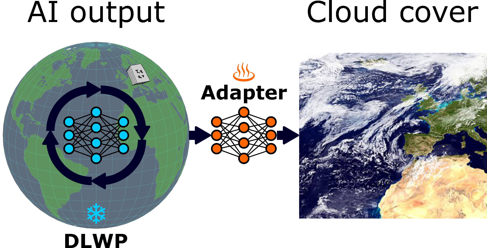

🌍 Climate Informatics 2026 Hackathon

Lausanne | 27–30 April 2026
Join us for an exciting hackathon focused on advancing machine learning techniques to look into the cloud representation of deep learning weather prediction models. Collaborate with experts in climate science and AI to tackle this challenge!
📍 Location
Lausanne, Switzerland 🇨🇭
📅 Dates
27–30 April 2026
About
In the Climate Informatics 2026, we will together explore how deep learning weather prediction (DLWP) models see clouds.
Clouds are a critical component of the Earth's climate system, influencing energy balance, precipitation, and atmospheric dynamics.
However, the cloud cover often remains unpredicted in DLWP models, which limits their evaluation and interpretability.
In this hackathon, we will work together to develop and apply machine learning techniques to analyze the cloud representation in DLWP models, with the goal of improving our understanding of these models and ultimately enhancing their performance.
The goal is to learn an adapter that maps typical DLWP model output to cloud cover, and to use this adapter to analyze the cloud representation in the model.
As most DLWP models are trained on the ERA5 reanalysis dataset, we will take a perfect model approach: we will train neural networks to map ERA5 reanalysis outputs to ERA5 cloud cover.
This will allow us to analyze the raw cloud representation from DLWP models.
Testing their generalisation and robustness, we will apply the trained adapter to hold-out ERA5 data, as well as model output from the AIMIP project, which includes a variety of DLWP model output on climate-like timescales.
In the end, we hope to identify key problems and opportunities for improving the cloud representation in DLWP models, which can ultimately contribute to advancing our understanding of DLWP models for climate projections and to improve their weather prediction capabilities.
Key Problems We Aim to Address
Cloud diagnostics
The aim is to learn an adapter that can be applied to any DLWP model output to produce cloud cover predictions. We want to enable cloud diagnostics for DLWP models that don't predict clouds.
Model evaluation
By comparing the adapter's output to known cloud cover, we can assess model performance and identify biases. This will help us understand the limitations of DLWP models and guide future improvements.
Application
By using the adapter as observation operator in data assimilation, we can assimilate satellite cloud observations into DLWP models. This can improve their accuracy and reliability for weather prediction.